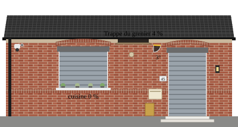

Trois sortes de points chauds posés sur le fond : voyant, valeur, liaison. Couleurs de l'état : vert actif, gris éteint ou inconnu, orange alerte, rouge coupé.
Voyant (relais, contact)
Rond
Carré
Icône (MDI)
Clignotant
Source : un relais, ou une mesure avec condition (contact, entrée).
Valeur (mesure)
Cartouche
Avec unité
Contour seul
Inconnue
Texte avant, valeur formatée, unité. Cartouche ou contour selon le fond.
Liaison (voie de communication)
Active
Alerte (UDP muet)
Muette
Coupée
Trait animé quand la voie échange : ModBus série, esclave, Wi-Fi, UDP, range extender.
Posés sur le dessin de la maison (état simulé)

Voyant rond vert, à gauche de la fenêtre : relais ON
Voyant rond gris, sur le volet de la fenêtre : OFF
Icône ampoule : lumière du grenier
Cartouche : niveau de la cuve, lu par ModBus
Trait pointillé en bas : liaison ModBus série, active